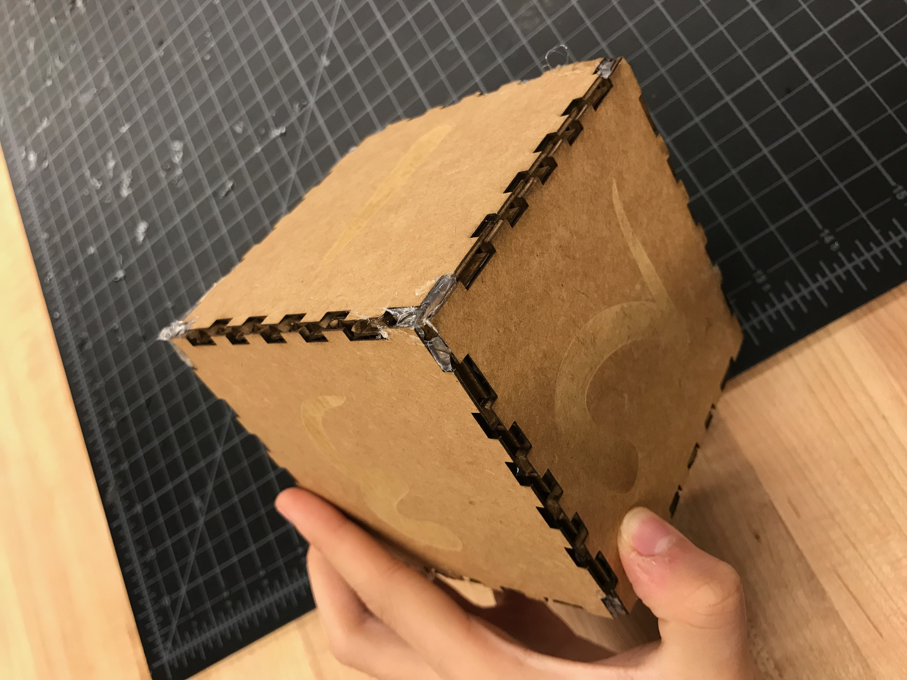
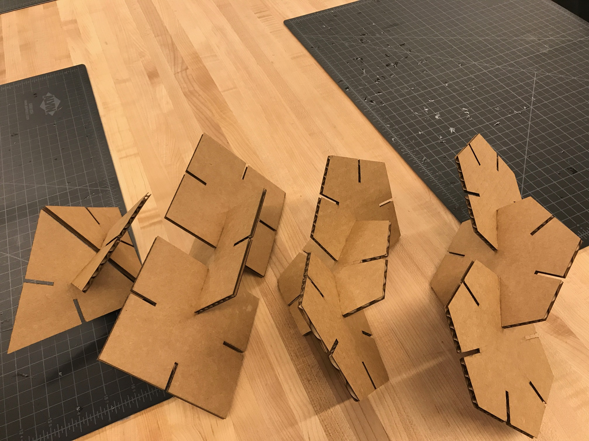
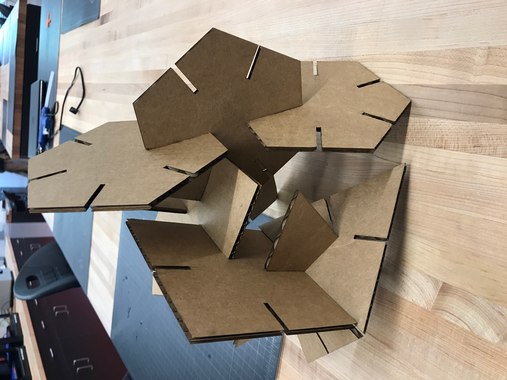
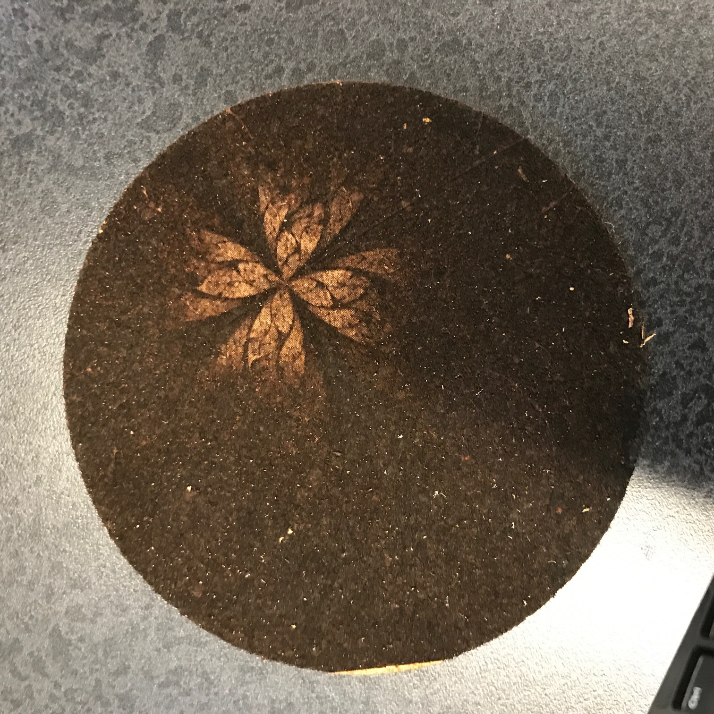
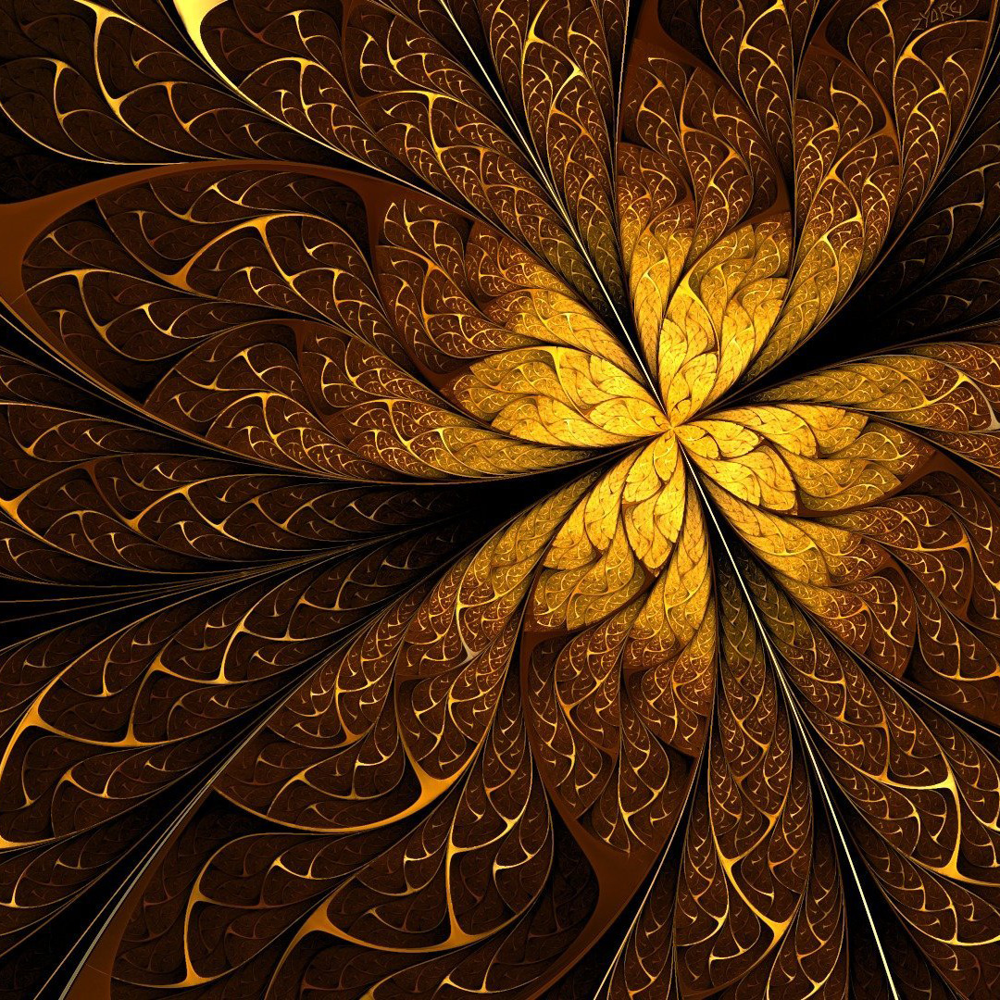
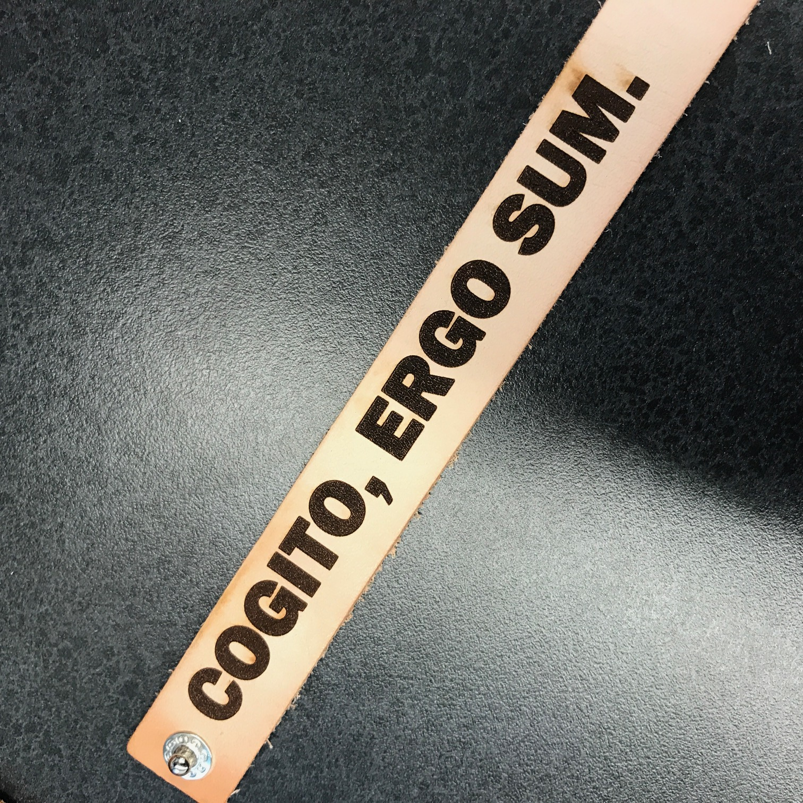

Rotation 4: Laser and Vinyl Cutting

I made a pretty big die. it is made of cardboard. I put numbers as rasters and edges as vectors so that the laser printer can cut the edges
while printing a number on each side. After printed, I joined them together with glue.

Then I cut out my picture to turn it into a jigsaw puzzle. Since my Coreldraw spitted errors whenever I try to open a dxf file at it,
I had to make the scheme from the beginning on CorelDraw which was very painful.
cdr file download.

Next, I made press fit kits using CorelDraw as well. they did fit together snuggly since I knew that the widths of indents should be the same as the
height of the cardboard, which was 1/8". I made a right triangle, a square, a pentagon, and a hexagon. Then I made the indent on each side of the polygons.
I printed 3 copies of it, so that I can actually have enough to make something out of them. And this is the result.
press fit kit file download.

this is the answer to the ultimate question of life, the universe, and everything.

I didn't burn it. the picture was just too complicated that it couldn't handle it. At least the flower-shaped centerpiece is printed. I'm good with that.

this is the picture I wanted to be printed on the coaster.
cork coaster file download.

I made a leather strap. I think, therefore I am. It took 27 seconds to make this, and it was worth it. The letters are kinda off-centered, but
it didn't make so much difference when I put it on.